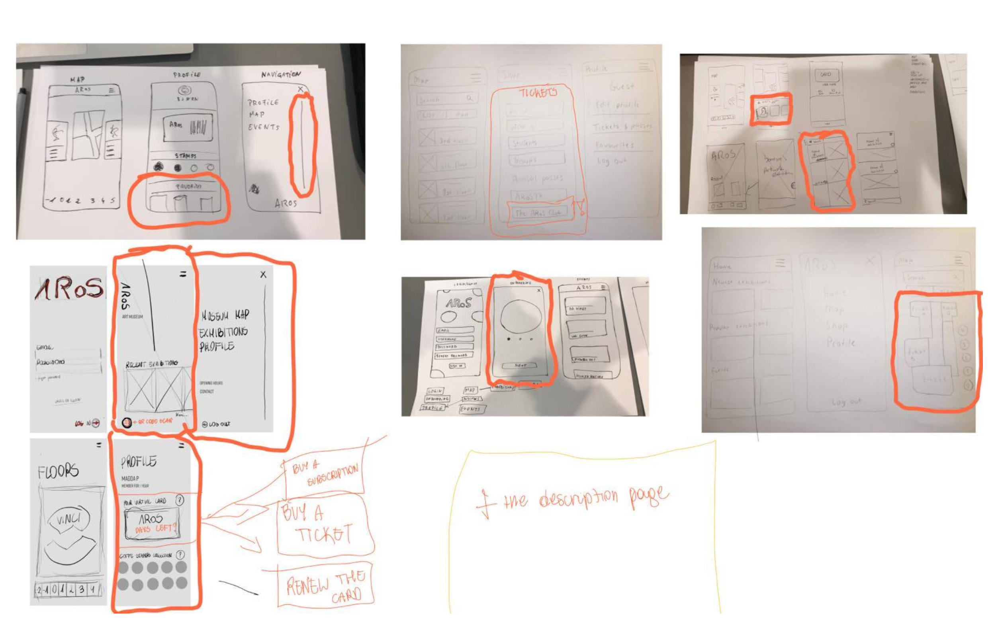

App that allows users to share their food with others to avoid food wasting process.
Mobile web application
The Salvatio push company is a start up which helps people in danger. User, in dangerous situation, has to tap 1-3 times the salvatio push''s device which sends information by app in his phone to closest friends. The product is reserved mostly for women, elder people and atheletes. In cooperation with Magda Polakowska, we had to improve current (at this time) design and also create new stuff to mockup.
Before we joined to Salvatio push team, they've had already a logo and visual identity. That's why we decided to use those color in our improved version of digital prototype. The same like in logo we used this gradient as a colors for elements like top bar, navigation and call to action buttons.
In mockup we had to show whole process of using this app, starting from creating an account and connecting app with device, finishing on searching people in danger and changing settings. Because not only women are in target group but also elder people we tried to keep layout and main function as simple as possible.
Generally the main page contains information with types of messages and easy access to settings where user can change the text of messages. In navigation user can find options with where can manage close contact, map with people in danger, settings and also user profile. Regarding map, user can check there how many people responded, how muh time it will take him to go to this place and the address.
Mobile web application
UX/UI designer, Front-end developer
Adobe XD, Github, JavaScript,
Explore the repository
Explore the app
The Kunste app is a mobile application created for the most famous art museum in Aarhus. The main goal of this app is to expand museum’s digital potential. By this solution we want to allow visitor to check information about the latest exhibitions and make it possible to buy online tickets and keep them as a virtual card, especially during the pandemic time when contact with other person should be limited.
Based on our research we were able to sketch some our idea of how app should look like and what options it should contain. Our sketches are taking under consideration only the mobile version, because following our first idea we decided to create only a mobile version of our solution. The main purpose of it is to use it in the museum while exploring the exhibitions, and no one takes laptop to the exhibition tours.
After the first part of a design process (sketching), we created a first part of our digital solution - wireframes. Thanks to that we could place elements such as navigation and sliders in the right places and decide on how the layout of the app will look like. As you can see, we decided to use a lot of white spaces. Thanks to that, we were able to further direct the user's attention to the focal point of our application yet communicate a sense of professionalism and simplicity.
Before we went to the mockups we had had to to prepare the design that will follow the museum’s visual identity. During demanding discussions we chose font called Futura PT for headers and Lato for block of text. Also we decided to use colors that matches to museum visual identity the most. In addition, when it comes to icons, we decided to keep them in minimalistic and thin style.
Based on created wireframes and style tiles we were ready to prepare mockups of our app. Our goal was to keep the design minimalistic, however, elegant and clean that is why the first conspicuous thing is a slider with current exhibitions on the bottom of the screen and a lot of white space.
Going further, when we choose „Exhibition” section in the menu we will be moved to the page where we can find information about current exhibitions. On each exhibition preview we can read its title and finish date.
Also, in the „My profile” page user can open his virtual card to scan in the entrance and get a digital coffee stamp for each visit. If you collect 10 of them, you will be able to get a free coffee in the museum’s cafe.
Digital prototype
Our solution for Arla is prepared for its farmers. The main purpose was to create an easy and convinient way for them to fill up a form with data about their farms. Also me and my group had to convinced them to stay on website after sending form. Last but not least, we had to follow the Arla's CVI. So here we are, take a cup of tea and check what we've already created.
After thorough research, we can move on to the next step and put our ideas on piece of paper. Each of us took a pen/pencil and draw his/her visualisation of our future solution. Thanks to that, we got many ideas of template for not only main page but also other pages like form, data and profile.
After sketching we created a first part of our digital solution - wireframes. It enabled us to placed elements and boxes with content in rights places.
This first time we didn't have to create our own design becuase the purpose was to following Arla CVI. In this case, we analized whole details in document and chose elements which the most suits to our solution.
We want to present our mockups of first desktop version. Our main goal was to create a solution that enables farmers to have an easy access to check their data and fast way to fill up a form. That's why our home page is a dashboard with the most important information for farmers and shortcuts to other pages.
Website
UX/UI designer, front-end developer, back-end developer
Adobe XD, JS, jQuery, PHP, Headless CMS, SEO
Explore the prototype
The Korepetycje24 is a website created for a teacher who coaches pupils and students in math, chemisty and physic. She needed a one page website where students/pupils and their parents will be able to read about what subjects she learns, what is the price for the lesson and also have posibility to sign up for the lesson or ask a question.
In the previous section I wrote that I had to create contact/sign up form. To do that I used PHP and becuase no one can see this code in the browser, I would like to show you it here.
At the beginning I wrote the script which disables default form behavior. Then, I took all values written by user from each input and put into variables. After that, I downloaded data from mail.php file and put varaibles from inputs into POST variables (from PHP).
Subsequently, I wrote validation in PHP and used mail() function to send form directly on teacher's mail. What is more, in jQuery I added visualisation of my validation in PHP. Thanks to that user will know if the form was sent or some data are invalid immidiately after click send button.
Digital prototype
The Slepfi is a hobbyist’s project created by a passionates of good design and solutions that can make people’s life easier. The main purpose of this website is to provide a solution that will allow user to find a place to stay based on attractions around this place. The website's filters will try to search a place that matches users preferences. This prototype is just a beginning. Next step is to code the entire product.
In the shortest way we can say that design system is a set of deliverables such as reusable components, design rules and pattern library. This is an extremely helpful tool for the company and its design department.
That is why we decided to create a whole prototype based on design system. Thanks to that we were able to keep the consistency and design style through all pages. Moreover, due to the fact that one of our member is a developer, we wanted to make not only our work easier but also his one.
As the fact that each design system is based on the components, there is the same with Slepfi website. The whole platform is created by components starting from buttons and inputs and so on, ending on cards. If we look at the screen with button components we can find out that they are made by putting each each element of all variants to one main component and then creating other components with various variants by hiding unnecessary elements and changing backgrounds.
As it can be noticed, the whole platform is about traveling and searching perfect place to stay based on our attractions’ preferences. Because of that we are aware that this is one of the most essential part in the whole project and platform will be useless if it doesn’t work perfectly. User needs to be able to search this place in a quick and fast way. That is why, we placed the search on the visible place on the home screen where user can’t miss it. Furthermore, user has an access to the search in any place on the platform due to the fixed navigation.
With keeping this in mind we decided to focus on images that will show say more than just a block of text. That is why, user can see the huge image on the login page with short information about the place on the picture, just in case if he or she would like to visit it in the future.
Also due to a lot of information and content we wanted to balance them all. That is why we used a lot of white space. This allows us to create a readable, easy to navigate design that people will not have problem to use.
Last but not least, our target group are people, mostly young, so we made a decision to make the whole platform less official and formal. Thanks to that, the communication with user will be kind and warm and everyone can feel comfortable and welcome.